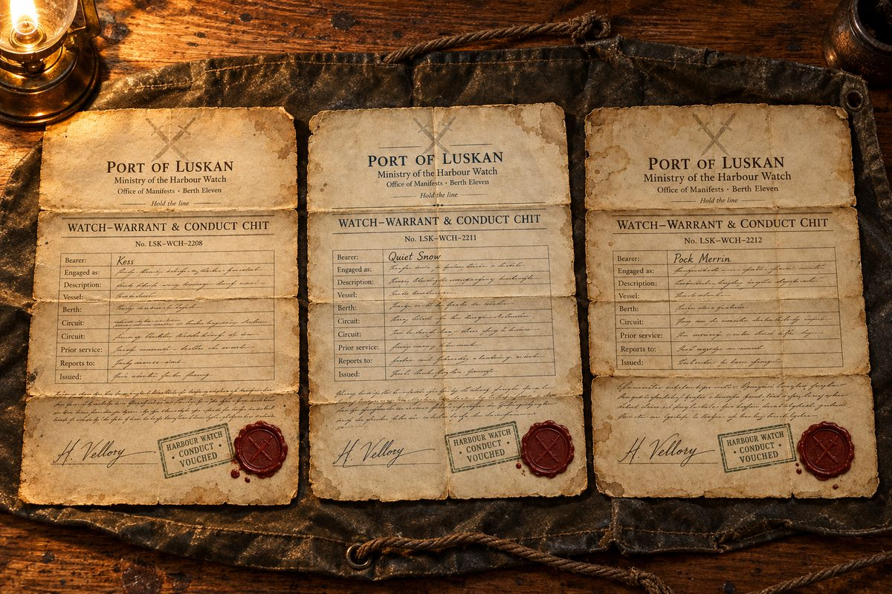
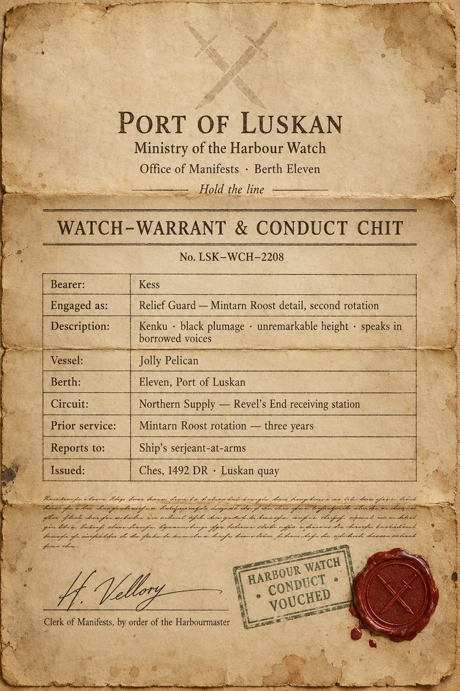
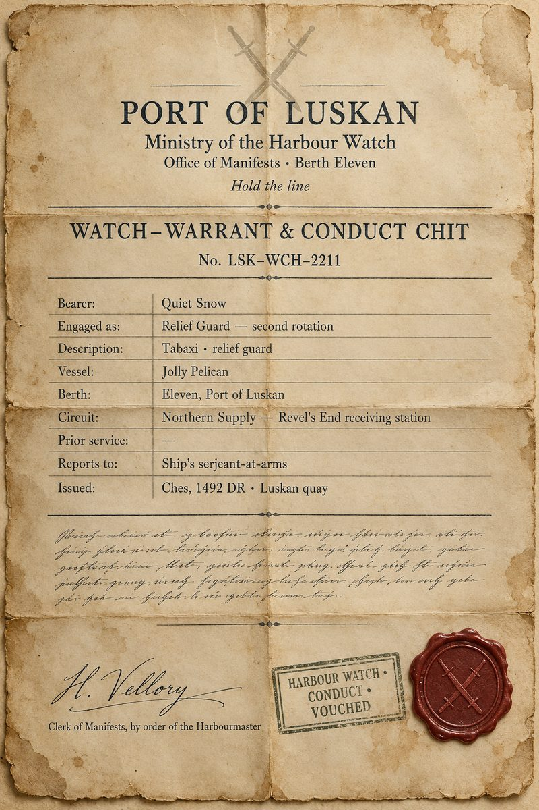
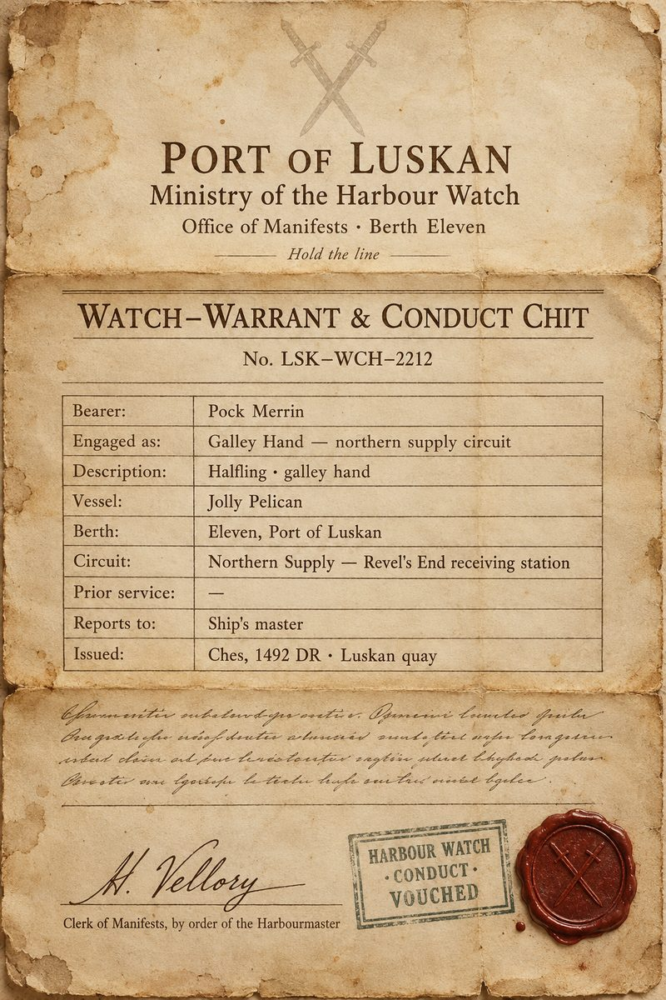

Sheet 0 — Rules for Everyone
Applies to all three covers, boat and prison alike

Aboard the Jolly Pelican
- Cover names only, from the gangplank on. A slipped name dies at sea.
- You answer to the ship's master like any other crew.
- Be unmemorable. Nobody smuggles themselves into a prison by being memorable on the boat.
The Roost (every cover) — a clerk's second question lands here
- The Mintarn Roost: harbour fort and signal roost above Mintarn's free harbour — squat grey stone, wind-bitten; guards the tyrant's tribute vault and the beacon line
- Relief muster: Sergeant Brack Tallow runs it — murder on paperwork, soft after dice; every relief guard has an opinion of him, a mild one
- The cold-coin bonus: real, and paid on the wall, not the ledger
- The Roost cook: waters the grog; everyone knows, nobody says it to his face
- Postings: one season, renewable; nobody who served there calls it anything but 'the Roost'
Inside Revel's End (Varrin's intel — months old)
- Prisoners are numbers. It is Thirteen, never a name.
- Shifts come from the duty sergeant. New arrivals draw the night watch.
- At night the tower must be able to account for you at all times.
- Irons go on any prisoner moved after dark.
- Cells never open at night without the warden's own order.
- A guard who lingers at a cell door gets asked why.
- To talk to Thirteen you need a reason to be standing there that survives the asking.
Sheet 1 — Kess
Worn by Blood Feather

| Name | Kess, of the Mintarn Roost |
| On the paper | Kenku · relief guard |
| Service history | Three years on the Mintarn Roost rotation |
The legend — know these answers cold
| Who trained you? | Serjeant Hedda Vool, third watch — retired last spring, bad knee. "Vool ran me my first year. You don't forget her whistle." |
| The Roost in winter? | Frozen gull guano on the stones, whale-oil smoke off the lamps, wet hemp rope. "You smell the guano before you see the walls." |
| Three years — why leave? | Boredom, plainly. Same six walls, counting sails. Took the northern relief posting for the change and the season pay. |
| Your rotation? | Second rotation, as the order says. You take what the duty sergeant hands you and you don't remark on it. |
Conduct
- Borrowed voices stay stowed unless the legend itself would use them.
- When stared at — and you will be — the name Kess answers before the question is asked.
Liabilities
- Only kenku anyone on this coast has seen.
- The Varkenbluff wanted posters sketch a kenku.
Sheet 2 — Quiet Snow
Worn by Kiara

| Name | Quiet Snow |
| On the paper | Tabaxi · relief guard · second rotation |
The legend — know these answers cold
| Before the Roost | sell-sword gone respectable — caravan contracts along the Spine until one went bad in the snow; took steady wages over good stories and never looked back |
| The scars | 'a white bear, and the bear kept the argument' — said once, flat; refuses to make it a tale |
| Habits | slow to speak; watches hands, not faces — caravan habit, and says so if pressed |
| The cold | has stood post in cold country before; the weather is a wage negotiation, not a hardship |
| Bearing | no captain's bearing — takes orders like someone glad not to be giving them anymore |
Conduct
- You answer to the ship's master like any other crew.
- The name Quiet Snow answers before the question is asked.
Sheet 3 — Pock Merrin
Worn by Slim

| Name | Pock Merrin |
| On the paper | Halfling · galley hand |
The legend — know these answers cold
| Before this | quartermaster's runner out of the Mintarn victualling yard — counted barrels, chased manifests, knew every stevedore's name by the second morning |
| Why the north | runners who can count get sent where nobody wants to go — complains about it cheerfully and often |
| The questions | curiosity is inventory habit: asks what things are, where they're kept and who holds the key — every question has a boring reason |
| Knows | stores, ledgers and kitchens; no knives beyond a belt-knife, never seen throwing one |
| Debts | small friendly debts everywhere, paid in gossip — three harmless pieces always ready |
Conduct
- Galley hands answer to the ship's master.
- The name Pock Merrin answers before the question is asked.
Off the roster for the voyage north — called away at Luskan.
Marta Greel
Worn by Maltus Draught
| Name on manifest | Marta Greel — a clerk's error, never corrected |
| Answers to | "Greel." Always has. |
| On the paper | Human · relief guard |
The legend — know these answers cold
| How does a clerk's error survive the muster roll? | Each muster copies the roll before it. Correcting a standing name takes a Ministry officer's counter-signature and a fee — nobody has ever cared enough to spend either. "Cheaper to answer to Greel than to fix Marta." |
| Last posting? | Luskan quays — stores escort off the victualling manifests. Counting crates before counting heads. |
| Watch rotation — dawn or dusk? | Dusk. Always answer dusk, without thinking. "Dawn's for men the sergeant likes." |
Conduct
- If someone reads "Marta" aloud: one tired shrug. Never explain twice — men who tell the story twice rehearsed it.
- Steady hands, counted words. Be the man at peace with the ministry's paperwork.
Liabilities
- The name itself — every roster reading is a small test.
Neris Fane
Worn by Freya
| Name | Neris Fane |
| On the paper | Moon-elf · relief guard |
The legend — know these answers cold
| Your name? | Neris Fane. Flat, bored, no hesitation. The name answers before the thought does. |
| Where from? | Fresh muster — signed on at Luskan, first posting north. A thin record because the record is new, not missing. |
| Why the north? | Season pay, and no one asks a new muster why she wants distance. "The pay's north. So am I." |
| Why so quiet? | "Talking's for the mess. I'm eating." A bored guard is unremarkable; an evasive one is remembered. |
Conduct — at table, among crew
- Hood down when speaking — a guard doesn't hide her face at table.
- Gloves off. Eyes up, not down — you're not ashamed, you're bored.
Conduct — on deck and on watch
- Hood and gloves are fine where every soul wears them: wind, watch, battlements.
- Gaze stays level, brief, and bored — give no one anything worth holding.
Liabilities
- Amber-gold eyes; the air crackles when the blood is up — held gazes read it as fey.
- Nothing fey happens where it can be seen. Not once. No story survives a witnessed surge.